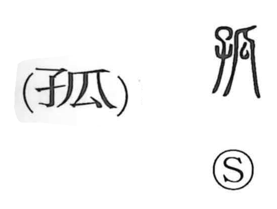

孤

Kun: | On: ko
orphan ・ solitary ・ lonely
Explanation
A phono-semantic character, 孤 combines 子, “child,” for meaning with 瓜 as the phonetic element. Its original sense is a fatherless child—a minashigo, an orphan. From there it broadened to describe things that stand alone or feel forlorn, as in phrases like 孤雲 “a solitary cloud,” 孤舟 “a lone boat,” and 孤客 “a traveler alone,” and by extension anything with a lonely, desolate air. In classical usage, rulers used 孤 and the related 寡 (denoting one left without a spouse) as self-effacing titles, hence the humble first-person expression 寡人.